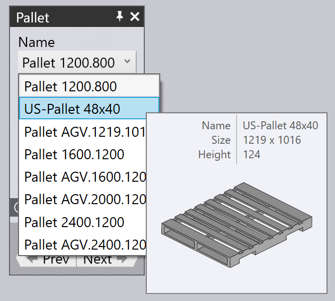

팔레트에서 픽업
진공 석션 또는 자석 그리퍼를 사용할 때, 블랭크(평평한 파트)는 _팔레트_에서 집어 올립니다. 이 파라미터들은 이 처리에 영향을 미칩니다:
-
기계 셀에서 팔레트의 위치.
-
팔레트서 파트 스택의 위치와 방향.
-
파트에서 석션 그리퍼의 위치와 방향.
-
그리퍼의 석션컵 컨피규레이션(어떤 컵이 켜지고/꺼지는지, 각 소켓에 어떤 타입의 컵이 장착되어 있는지).
-
로봇의 카메라에 의해 _이미징_되고, 파트 위치 보정을 위한 레퍼런스로 사용되는 파트 영역.
이 모든 설정을 편집하는 데 사용되는 패널이 아래에 표시됩니다. 이들은 모두 위/아래 네비게이션 링크로 상호연결되어 있으며, 논리적 순서에 따라 다른 패널로 연결됩니다:

위의 이미지에서 볼 수 있듯이 이 패널은 시뮬레이션에서 다양한 객체를 클릭하기만 하면 쉽게 액세스할 수 있습니다:
-
팔레트 패널을 열려면, 팔레트를 클릭합니다.
-
팔레트(픽업 패널)에 있는 파트 스택을 편집하려면, 팔레트 위에 있는 블랭크를 클릭합니다.
-
블랭크(그리퍼 패널) 위의 그리퍼 위치를 편집하려면, 그리퍼를 클릭합니다.
-
그리퍼(석션 패널)의 석션컵 컨피규레이션을 편집하려면, 석션컵 중 하나를 클릭합니다.
-
이미징 위치(미세위치 인식 시스템에서 사용)를 편집하려면 카메라를 클릭합니다.
팔레트 패널
팔레트 패널은 팔레트를 선택하고 셀에 위치시키는 데 사용됩니다. 팔레트를 클릭하기만 하면 이 패널을 열 수 있습니다. Flux는 또한 로봇이 팔레트에서 파트를 집어 올리는 지점에 위치하도록 시뮬레이션 타임라인을 배치합니다.

-
다른 팔레트를 선택하려면 이름 선택을 이용합니다. 일반적으로 이 블랭크에 사용할 수 있는 팔레트만 나열되지만, 필터링 처리됨 체크박스를 끄면 사용 가능한 모든 팔레트가 나열됩니다.
-
이름 목록에서 이름 위로 마우스를 이동하면 썸네일과 함께 팔레트의 간략한 요약이 표시됩니다:
 -
위치 입력을 사용하여 팔레트를 Z 및 X(셀 좌표)로 배치하고, 각도 입력을 사용하여 팔레트를 회전합니다. 팔레트를 움직이거나 회전할 때 팔레트의 파트 스택과 그리퍼/로봇은 모두 이 움직임을 따릅니다.
-
계속 및 뒤로 버튼을 사용하여 셀의 또 다른 팔레트(예: 파트 하적 작업이 있는 팔레트)로 이동합니다.
-
수용 네비게이션 버튼을 사용하여 팔레트에서 파트 스택의 위치를 편집합니다.
-
확장됨 섹션에서 컨피규레이션. 저장소 버튼을 사용하여 이 셀 컨피규레이션(모든 팔레트 포함)을 이 기계에 대한 기본값으로 저장합니다.
픽업 패널
픽업 패널은 팔레트의 파트 스택 위치를 편집하는 데 사용됩니다.팔레트에 놓인 블랭크 스택을 클릭하여 이 패널을 직접 열 수 있습니다.(팔레트 패널로부터의 수용 링크를 사용하여 액세스할 수도 있습니다).

-
위치 입력을 사용하여 팔레트에 스택을 배치합니다; 이 좌표는 팔레트 코너를 기준으로 Z 및 X 방향으로 파트의 중심을 지정하며, 팔레트의 로컬 좌표 공간에 있습니다.
-
각도 입력을 사용하여 팔레트에서 파트를 회전시킵니다.
-
파트 뒤집기 스위치를 사용하여 파트를 뒤집습니다. 이는 일반적으로 첫 번째 벤딩부를 처리하기 전에 추가 파지 작업이 필요하다는 점에 유의하십시오(이는 TecZone Bend에 의해 자동으로 추가됩니다).
-
카메라… 링크를 사용하여 카메라 패널로 전환하면 그곳에서 픽업의 이미지 인식 단계를 셋업할 수 있습니다.
-
이 보간점… 링크는 웨이포인트 편집기를 불러와서 픽업 중에 로봇 경로를 미세 조정할 수 있습니다.
-
파지 스테이션. 링크를 클릭하면 파지 스테이션 패널을 불러와서 픽업 작업 중 파지 스테이션의 위치를 컨피규레이션할 수 있습니다.
파트가 팔레트에서 움직일 때 그리퍼는 파트에 _고정_되어 있고 로봇은 이 움직임을 따릅니다.
그리퍼 패널
그리퍼 패널은 서로 다른 그리퍼를 선택하거나 그리퍼가 파트를 집어 올리는 위치와 방향을 변경하는 데 사용됩니다.

-
다른 그리퍼를 선택하려면 이름 선택을 사용합니다. 일반적으로 이 파트에 적합한 그리퍼만 표시되지만(그리퍼 크기 및 적재량에 따라), 필터링 처리됨 체크박스를 끄면 모든 그리퍼가 나열됩니다.
-
그리퍼 목록에서 이름 위로 마우스를 이동하면 썸네일과 함께 그리퍼의 요약이 표시됩니다:

-
위치 입력을 사용하여 파트 중심을 기준으로 그리퍼 중심을 이동하고, 각도 입력을 사용하여 파트 방향을 기준으로 그리퍼를 회전합니다.
-
흡입컵 링크를 사용하여 그리퍼의 _정밀 편집_으로 전환합니다(다른 석션컵 선택, 컵 켜기/끄기 전환).
-
이 그리핑 면 선택 버튼을 사용하여 다른 평면에서 그리퍼를 위치시킬 수 있습니다. 일반적으로 모델에서 가장 큰 평면은 그리퍼를 위치시키는 데 사용됩니다. 이를 변경하려면, 이 버튼을 클릭합니다. 그런 다음 그리퍼가 위치해야 하는 평면을 클릭합니다:

-
이 집게형 그리퍼 사용 버튼은 이 파트를 파트 디스펜서 및 조 그리퍼(기계식 그리퍼)를 사용하도록 전환하는 데 사용됩니다. 픽업부터 하적까지 벤딩 사이클의 모든 스테이지는 조를 사용하여 재계산됩니다gripper[1].
석션 경고
그리퍼를 움직여 석션컵 일부가 시트에서 떨어지거나, 파트의 홀 위에 놓이면, 해당 컵이 강조 표시되고, 아래 이미지에서 볼 수 있듯이
네비게이터의 픽업 열에 오류가 나타납니다:

작업 메뉴

이 작업 버튼은 그리퍼에서 몇 가지 유용한 동작을 제공하는 메뉴를 불러오는 데 사용됩니다:
-
자동-Shift 석션컵이 모두 파트 내부에 있고 홀 위에 있지 않도록 파트 위에 그리퍼를 리포지셔닝하려고 시도합니다(가능하다면).
-
누설이 존재하는 석션 컵 끄기: 홀 위에 놓여있거나 part[2]경계 밖에 있는 모든 서션컵을 끕니다.
-
모든 석션 컵 켜기: 꺼진 모든 석션컵을 켭니다.
-
컨피규레이션. 저장소: 일부 석션컵을 끄거나 제거하거나, 석션컵의 길이나 각도를 변경하여 그리퍼를 _컨피규레이션_하면(모양을 변경할 수 있는 MultiGripper), 그리퍼의 변경된 컨피규레이션을 새 이름으로 저장하여 쉽게 재사용할 수 있습니다.
-
그리퍼 내보내기: 현재 그리퍼를 TecZone Bend의 또 다른 설치로 가져올 수 있는 .fxbgrip 파일로 저장합니다. 사용자 정의 그리퍼를 가져와서 다른 설치와 공유해야 하는 경우 유용합니다.
석션 패널
석션 패널은 그리퍼의 석션컵 레이아웃을 컨피규레이션하는 데 사용됩니다. 석션컵을 직접 클릭하거나, 그리퍼 패널에서 석션 링크를 선택하여 이 패널을 열 수 있습니다.

-
흡입컵 # 선택을 사용하여 그리퍼에서 특정 석션컵을 선택하거나, 계속 및 뒤로 버튼을 사용하여 석션컵을 이동합니다. 선택한 석션컵은 파란색으로 강조 표시되고 편집될 수 있습니다.
-
각 석션컵에 대해 켜짐, 꺼짐 또는 제거됨으로 상태를 설정할 수 있습니다.이에 대한 자세한 내용은 아래 설명 참조.
-
타입 패널을 사용하여 다른 타입의 석션컵으로 변경합니다.일반적으로 그리퍼에서 모든 석션컵을 새로운 타입으로 변경하지만, 모두 변경 버튼을 끄고 석션컵을 변경함으로써 석션컵을 혼합할 수 있습니다. (이를 수행하면, 석션컵의 선택이 제한될 수 있음에 유의하십시오 그리퍼 프레임에 장착된 모든 석션컵은 동일한 작업 높이를 가져야 하기 때문입니다). 위 이미지는 두 개의 석션컵을 더 작은 것으로 교체한 모습을 보여줍니다(기본값 SAXM80 대신 SAXM50).
-
리셋 버튼을 사용하여 그리퍼를 원래 상태로 복원합니다. 모든 석션컵이 켜지고 그리퍼에 정의된 기본 컵 타입으로 재설정됩니다.
석션컵의 기본 상태는 켜짐(On)입니다. 즉, 석션컵은 진공 라인에 연결되어 있으며 올리는 데 도움이 됩니다.
석션컵이 파트에서 홀 위에 놓여 있으면, 상태를 꺼짐(Off)으로 변경할 수 있습니다. 즉 진공이 없음을 의미합니다. (이는 그리퍼의 리프트를 줄이고 리프트 중심을 변경하는데, Flux는 이를 고려하여 그리퍼 용량 점검을 수행합니다). 컵이 여전히 프레임에 장착되어 있으며, 충돌점검에 참여한다는 점에 유의하십시오. 위 이미지에 있는 두 개의 석션컵으로 볼 수 있듯이, Flux는 꺼진 석션컵을 와이어프레임으로 표시합니다.
마지막으로, 석션컵을 제거됨으로 설정할 수 있습니다. 즉, 실제 기계에서 컵이 프레임에서 제거되었습니다. 이 컵에서는 들어올릴 수 없으므로 충돌이 일어나지 않습니다. 이는 컵이 성형된 영역 위로 떨어지거나 작업 중에 다이 또는 기계 테이블과 충돌하는 경우 유용합니다.
카메라 패널
픽업 처리에는 카메라에 의해 하나 이상의 이미지를 캡처하고, 이 이미지를 사용하여 팔레트에서 파트의 위치를 정확하게 추정하는 이미지 처리 시스템이 필요합니다. 로봇에 장착된 카메라를 클릭하거나 픽업 패널에서 카메라 네비게이션 버튼을 선택하면 카메라 패널이 열립니다. Flux는 로봇이 이미지를 캡처하는 데 필요한 위치에 있도록 시뮬레이션의 위치도 조정합니다:

-
색인 목록을 (또는 계속 및 뒤로 버튼) 사용하여 이 파트에 대한 다양한 정밀 인식 이미지를 순환합니다.이를 수행하면, Flux는 파트에서이미지 인식 영역을 보여주는 주황색 윤곽선을 표시합니다(위 이미지 참조).
-
위치 입력을 사용하여 Z 및 X 에서 이 영역을 다시 배치하여 인식 정확도를 향상시킬 수 있는 관심 있는 기능(코너, 작은 홀, 노치)을 더 잘 포함하도록 합니다.
-
추가 버튼을 사용하여 추가 인식 이미지 추가하고(최대 4개) 제거 버튼을 사용하여 현재 인식 이미지를 제거합니다. 파트 픽업 시뮬레이션 중에 Flux는 로봇이 카메라를 아래로 향하게 하여 각각의 인식 영역으로 이동하고 이미지를 얻기 위해 잠시 멈추는 모습을 보여줍니다.
투광 스테이션 사용 스위치가 켜져 있으면 카메라를 사용하여 이미지를 촬영하기 전에 파트가 조명이 켜진 테이블로 전달됩니다. 이는 콘트라스트를 높이고 반사율이 높은 파트에 유용합니다. TecZone Bend는 백라이트 테이블을 추가하고 픽업 팔레트 근처에 자동으로 위치시키지만, 해당 위치를 클릭하여 컨피규레이션할 수 있습니다: